[15-1] FLASH闪存 — 学习笔记
- 课程：江协科技《STM32入门教程-2023版 细致讲解 中文字幕》
- 视频：BV1th411z7sn?p=48，46:17（2777 秒）
- 素材：252 帧关键帧（每 11 秒，宽 1280px）+ PP-OCRv4 画面硬字幕 OCR（1246 段，采集端重建前计 1110 段）；关键截图 16 张随笔记收录（源图在
vidsum_out/stm32_p48/frames/，站内图片在assets/images/stm32-48/） - 字幕情况：该集 B 站没有 CC/AI 字幕，文本由画面烧录的中文字幕 OCR 得到（source=subtitle-ocr，自检
ratio=99.9%）；错字主要是存储→ 「存诸」（14 处）、数据→ 「数居」（4 处）、基地址→ 「基地」（4 处）、运行→ 「云行」（3 处）、读→ 「卖」（3 处）、电子签名→ 「电字签名」（1 处）——已按画面/上下文校正（清单见文末「存疑」）。 - 本集定位：理论课——00:40–04:05 只演示两个已写好的工程的现象（
15-1 读写内部FLASH、15-2 读取芯片ID），无写码过程；04:05–46:20 全部是 PPT + 手册。⚠ FLASH 库函数本集一个都没出现（FLASH_Unlock/FLASH_ErasePage/FLASH_ProgramHalfWord都没有；片头代码里只有作者自定义的Store_Data()/Store_Clear()封装函数）——库函数详解在 [15-2]。结尾 46:12「我们下小节来学习闪存的代码部分」。
一句话结论
FLASH 简介：STM32F1 系列的 FLASH 包含 程序存储器、系统存储器、选项字节三个部分，通过闪存存储器接口（外设）可以对程序存储器和选项字节进行擦除和编程；闪存是非易失性存储器（掉电不丢失），本节特指 STM32 内部闪存（就是下载程序存放的地方）。读写 FLASH 的两个用途：①利用程序存储器的剩余空间保存掉电不丢失的用户数据（C8T6 程序存储器 64K，简单程序只占前面很小一部分；选存储区域时绝不能覆盖原有程序，否则「程序自己破坏自己」——一般选最后几页）；②在程序中编程（IAP）实现程序的自我更新（相当于 OTA）。ICP 与 IAP：在线编程 ICP（In-Circuit Programming）——下载程序只需留几个引脚、不用拆芯片，用于更新程序存储器的全部内容，通过 JTAG/SWD（就是 ST-Link）或系统加载程序（Bootloader，即串口下载）；每次下载都是整体覆盖。在程序中编程 IAP（In-Application Programming）——可用微控制器支持的任一种通信接口下载程序，可做远程升级；作者自写 Bootloader 放在不被覆盖处，接收数据后写入程序正常运行的地方，再跳回/复位；比芯片自带的系统 Bootloader 灵活（后者写死、只能串口、只能靠 BOOT 引脚触发）——本课程不涉及 IAP 实现。存储器映像回顾：ROM 区（掉电不丢失，介质 FLASH）：0x08000000 程序存储器 Flash、0x1FFFF000 系统存储器、0x1FFFF800 选项字节；RAM 区（掉电丢失，介质 SRAM）：0x20000000 运行内存 SRAM、0x40000000 外设寄存器、0xE0000000 内核外设寄存器；看起始地址就能判断属于哪个区、有什么特性。闪存模块组织（表2，中容量产品）：①主存储器 0x08000000 起，页 0～页 127、每页 1K，共 128K——但 C8T6 只有页 0～页 63，共 64K；②信息块 = 启动程序代码（＝系统存储器）0x1FFFF000～0x1FFFF7FF，2K（原厂 Bootloader，不允许修改）＋ 用户选择字节（＝选项字节）0x1FFFF800～0x1FFFF80F，16 字节；③闪存存储器接口寄存器 0x40022000 起：FLASH_ACR@2000、FLASH_KEYR@2004、FLASH_OPTKEYR@2008、FLASH_SR@200C、FLASH_CR@2010、FLASH_AR@2014、保留、FLASH_OBR@201C、FLASH_WRPR@2020（各 4 字节）——这组寄存器属于外设（介质 SRAM），不是闪存本体。⚠ 小/中/大容量页数不同：小容量 32 页×1K、中容量 128 页×1K、大容量 256 页×2K（要查单独的《闪存编程参考手册》，不在参考手册里）；「芯片闪存容量 64K/128K」只指主存储器，信息块不计入。页起始地址规律：0x08000000、0x08000400、0x08000800、0x08000C00、0x08001000…步进 0x400（1K），直到 0x0801FC00——地址以 000/400/800/C00 结尾的往往就是页起始。闪存五项特性（与 W25Q64 一致）：①写入前必须先擦除 ②擦除以最小单位（页）进行 ③擦除后数据位全变为 1 ④数据只能 1 写 0，不能 0 写 1 ⑤擦除和写入后都要等待忙（BSY）。FLASH 基本结构（FPEC）：核心是 闪存存储器接口 / 闪存编程和擦除控制器（FPEC）——它负责程序存储器的擦除和编程、选项字节的擦除和编程；选项字节还能配置程序存储器的读/写保护；FPEC 不能操作系统存储器（Bootloader）。FLASH 解锁（核心）：FPEC 共三个键值——RDPRT 键 = 0x000000A5（解除读保护）、KEY1 = 0x45670123、KEY2 = 0xCDEF89AB（值可以随便定义，只要不容易被「翘锁」）；KEY = 钥匙/密钥寄存器。解锁：复位后 FPEC 被保护、不能写 FLASH_CR → 在 FLASH_KEYR 里先写 KEY1、再写 KEY2 → 解锁（两道锁，非人为基本不可能解开）；⚠ 错误的操作序列会在下次复位前锁死 FPEC 和 FLASH_CR（想翘锁却没按顺序 → 整个模块完全锁死，除非复位）。加锁：操作完成后尽快设置 FLASH_CR 的 LOCK 位，锁住 FPEC 和 FLASH_CR。使用指针访问存储器：读 uint16_t Data = *((__IO uint16_t *)(0x08000000));、写 *((__IO uint16_t *)(0x08000000)) = 0x1234;、#define __IO volatile。三步走：①写地址（地址加减必须加括号，否则运算符优先级出错）②强制类型转换（想 16 位读就 uint16_t *、8 位 uint8_t *、32 位 uint32_t *、浮点 float */double *）③用 * 取值/赋值。读不需要解锁（只看不改、权限低，直接读）；写需要解锁 + 后续流程（闪存在程序运行时是只读的）；写 SRAM 地址（0x20000000）可直接写（SRAM 可读可写）。volatile 讲解：目的＝防止编译器优化；Keil 默认最低优化等级，加不加无影响；提高优化等级后会出现两类问题——①用变量计数空循环做延时会被优化掉（编译器认为「没用、白浪费时间」）②变量被缓存到寄存器，中断里改了原变量而缓存不同步 → 加 volatile 告诉编译器「每次都执行到位、不要用缓存优化」。读写与硬件相关的存储器时必须加 volatile。三条流程（图）：全擦除——读 FLASH_CR 的 LOCK→若 =1 执行解锁（库函数里没有这个判断，直接无条件解锁）→置 FLASH_CR 的 MER（Mass Erase）位 =1→置 STRT 位 =1（触发条件）→查 FLASH_SR 的 BSY 位循环等待→（测试程序才）读出并验证所有页数据。页擦除——读 LOCK→解锁→置 FLASH_CR 的 PER（Page Erase）=1→在 FLASH_AR 写入要擦除的页地址→置 STRT=1→等 BSY=0——擦除最小单位就是一页＝1K＝1024 字节。编程——读 LOCK→解锁→置 FLASH_CR 的 PG（Programming）=1→在指定地址写入半字（这句本身就是触发条件，不需要置 STRT）→等待忙；写入前芯片会检查该地址是否已擦除，未擦除则不编程（除非写入的全是 0，那必定没问题）；只能以半字写入：字 Word＝32 位、半字 HalfWord＝16 位、字节 Byte＝8 位；写 32 位分两次、写 8 位很麻烦——只能「整页读到 SRAM → 随意修改 → 整页擦除 → 整页写回」；写入很多数据就循环调用该流程。选项字节（表6 信息块）：地址 0x1FFFF800，共 16 字节，成对存储：RDP/nRDP、USER/nUSER、Data0/nData0、Data1/nData1、WRP0/nWRP0…WRP3/nWRP3——带 n 的是反码，写入时必须在对应位置写反码才算有效，芯片检测到两者不是反码关系则数据无效、功能不执行（反码由硬件自动计算，库函数已封装）。去掉带 n 的只剩 8 个字节：RDP（写入 RDPRT 键 0x000000A5 → 解除读保护；否则闪存处于读保护状态、无法通过调试器读取程序，防窃取）、USER（硬件看门狗、进入停机/待机是否产生复位等零碎位）、Data0/Data1（芯片未定义功能、用户可自定义）、WRP0～WRP3（写保护：中容量每 1 位保护 4 个存储页，4 字节 32 位 → 4×32＝128 页，正好覆盖中容量最大 128 页；小容量按 32K 算；大容量每 1 位保护 2 页、4 字节不够 → 规定 WRP3 的最高位把剩下所有页保护起来）。⚠ 写保护位是反逻辑：1＝不实施保护（默认，因为擦除后全是 1）、0＝实施保护。选项字节擦除/编程流程（手册没给流程图、只有文字）：擦除——①解锁闪存 ②检查 FLASH_SR 的 BSY（事前确认没有其他闪存操作）③解锁 FLASH_CR 的 OPTWRE 位（选项字节还有一把小锁，要在 FLASH_OPTKEYR 里写 KEY1、KEY2）④置 FLASH_CR 的 OPTER=1 ⑤置 STRT=1 ⑥等 BSY=0。编程——检查 BSY→解小锁→置 FLASH_CR 的 OPTPG=1→指针写入半字→等忙。FPEC 会自动计算高字节的反码；当闪存由「保护」变为「未保护」时会自动执行整片擦除。器件电子签名：存放在闪存存储器模块的系统存储区域、出厂时编写、不可更改、用指针读指定地址即可获取；闪存容量寄存器 F_SIZE：基地址 0x1FFFF7E0、大小 16 位；产品唯一身份标识寄存器（UID）：基地址 0x1FFFF7E8、大小 96 位——96 位每片都不同，可用于加密（程序多处加 ID 判断，非指定设备不执行 → 程序被盗到别的设备上也难运行）。手册精读要点：任何读写闪存的操作都会使 CPU 暂停，直到本次闪存编程结束（因为执行代码本身要读闪存）——后果：若中断需要频繁执行（作者举例：点阵屏用定时器中断不断扫描刷新），读写闪存时中断无法执行 → 屏幕快速闪烁；结论：程序里有对时间要求严格的频繁中断时，慎用内部闪存存用户数据。另：写/擦除时必须打开 HSI 时钟（SystemInit 里已配好，别动它）。
0. 本集定位：理论课（片头演示成品 + PPT + 手册），代码在 15-2
- 00:40–04:05：只演示
15-1 读写内部FLASH、15-2 读取芯片ID两个已写好工程的现象，无写码； - 04:05–46:20：FLASH 简介 → 存储器映像回顾 → 闪存模块组织 → FLASH 基本结构 → 解锁 → 指针访问 → 三条流程 → 选项字节 → 器件电子签名 + 手册精读；
- FLASH 库函数本集零出现，[15-2] 才讲代码。
1. 片头两个成品程序
1.1 程序①：15-1 读写内部FLASH
- OLED 显示
Flag:A5A5（标志位，判断之前是否存储过数据，思路同 RTC 备份寄存器）与 4 个字节的Data； - 按 Key1 变换数据并存入内部 FLASH、按 Key2 全部清零；
- 断电重启、按复位键，数据都不丢——这就是「用程序存储器剩余空间存用户数据」。
1.2 程序②：15-2 读取芯片ID
- 用指针直接读指定地址，得到闪存容量（
0x0040＝64K）与 96 位 UID（每片不同）。
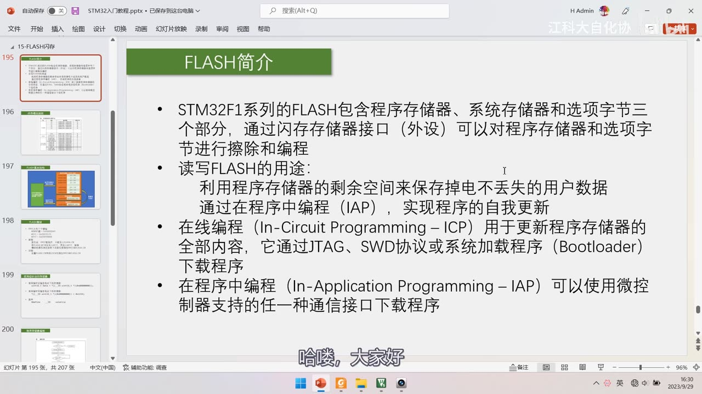
*图 1：PPT「FLASH简介」4 条——STM32F1 系列的 FLASH 包含程序存储器、系统存储器和选项字节三个部分，通过**闪存存储器接口（外设）*可以对程序存储器和选项字节进行擦除和编程；读写 FLASH 的用途：利用程序存储器的剩余空间保存掉电不丢失的用户数据、通过在程序中编程（IAP）实现程序的自我更新；在线编程 ICP 用于更新程序存储器的全部内容，通过 JTAG、SWD 协议或系统加载程序（Bootloader）下载程序；在程序中编程 IAP 可以使用微控制器支持的任一种通信接口下载程序；字幕「哈喽，大家好」
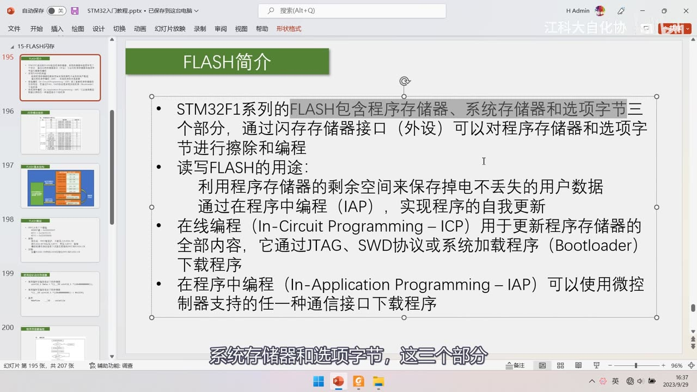
图 2：同页 PPT + 第一条高亮——「STM32F1 系列的 FLASH 包含程序存储器、系统存储器和选项字节三个部分」；字幕「系统存储器和选项字节，这三个部分」
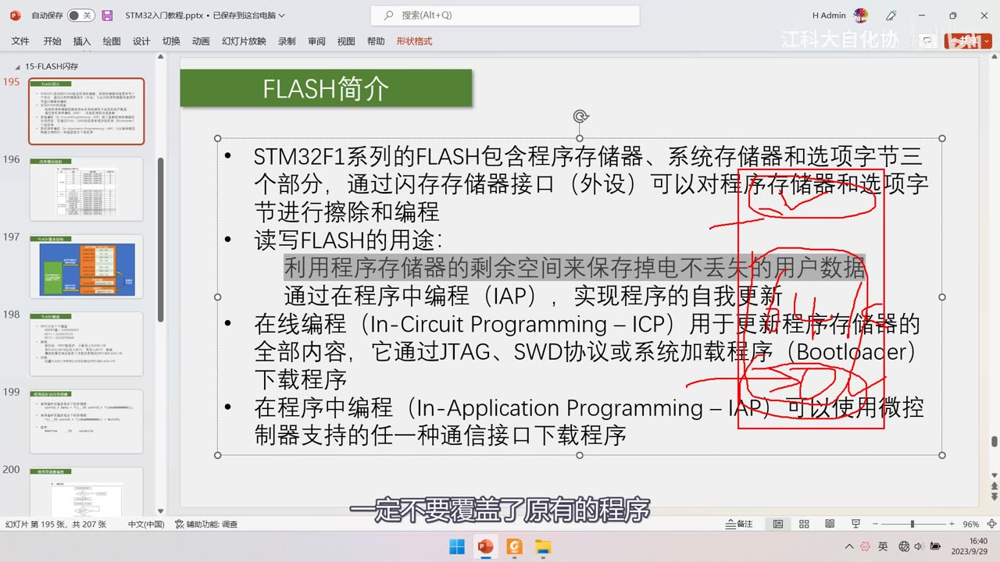
图 3：同页 PPT + 红笔框住「利用程序存储器的剩余空间…」与「IAP 自我更新」两行——提醒*选存储区域时绝不能覆盖原有程序；字幕「一定不要覆盖了原有的程序」*
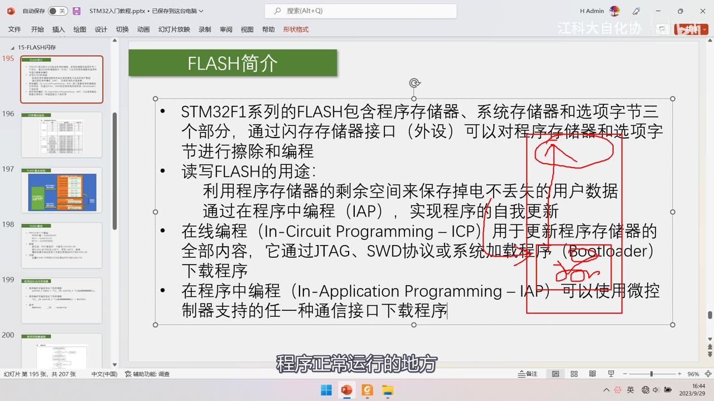
图 4：同页 PPT + 红圈圈住「系统加载程序（Bootloader）」并手写标注——讲 IAP 时说的是「程序正常运行的地方」，即自写 Bootloader 与用户程序的分区关系；字幕「程序正常运行的地方」
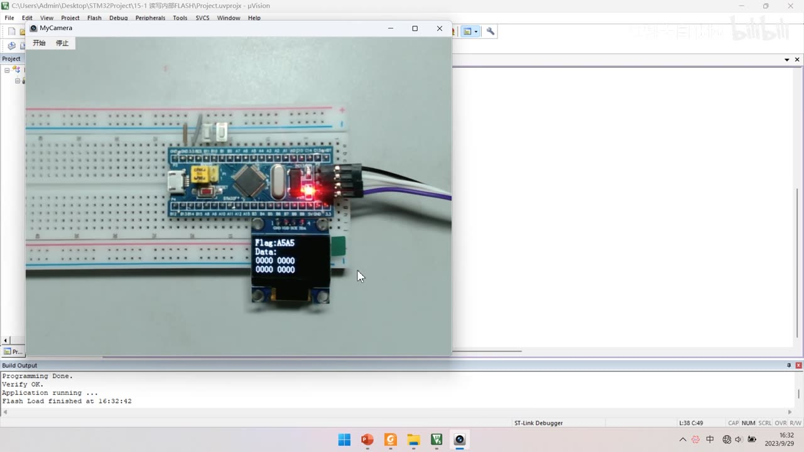
图 5：程序①现象——OLED 显示 Flag:A5A5、Data:、两行 0000 0000（工程 15-1 读写内部FLASH）；按 Key1 写入后数据变化、按 Key2 清零，断电/复位都不丢
2. 存储器映像回顾
| 区域 | 起始地址 | 介质 | 特性 |
|---|---|---|---|
| ROM 区（程序存储器 Flash） | 0x08000000 |
FLASH | 掉电不丢失 |
| ROM 区（系统存储器） | 0x1FFFF000 |
FLASH | 原厂 Bootloader，不允许修改 |
| ROM 区（选项字节） | 0x1FFFF800 |
FLASH | 配置读/写保护 |
| RAM 区（运行内存 SRAM） | 0x20000000 |
SRAM | 掉电丢失、可读可写 |
| RAM 区（外设寄存器） | 0x40000000 |
SRAM | 外设寄存器 |
| RAM 区（内核外设寄存器） | 0xE0000000 |
SRAM | 内核外设 |
- 看起始地址就能判断区域与特性（
0x08开头是程序存储器、0x20是 SRAM、0x40是外设……）。
3. 表2 闪存模块组织（中容量产品）
| 块 | 名称 | 地址范围 | 长度（字节） |
|---|---|---|---|
| 主存储器 | 页 0 | 0x0800 0000～0x0800 03FF |
1K |
| 主存储器 | 页 1 | 0x0800 0400～0x0800 07FF |
1K |
| 主存储器 | 页 2 | 0x0800 0800～0x0800 0BFF |
1K |
| 主存储器 | 页 3 | 0x0800 0C00～0x0800 0FFF |
1K |
| 主存储器 | … | … | … |
| 主存储器 | 页 127 | 0x0801 FC00～0x0801 FFFF |
1K |
| 信息块 | 启动程序代码（＝系统存储器） | 0x1FFF F000～0x1FFF F7FF |
2K |
| 信息块 | 用户选择字节（＝选项字节） | 0x1FFF F800～0x1FFF F80F |
16 |
| 闪存存储器接口寄存器 | FLASH_ACR | 0x4002 2000～0x4002 2003 |
4 |
| 同上 | FLASH_KEYR | 0x4002 2004～0x4002 2007 |
4 |
| 同上 | FLASH_OPTKEYR | 0x4002 2008～0x4002 200B |
4 |
| 同上 | FLASH_SR | 0x4002 200C～0x4002 200F |
4 |
| 同上 | FLASH_CR | 0x4002 2010～0x4002 2013 |
4 |
| 同上 | FLASH_AR | 0x4002 2014～0x4002 2017 |
4 |
| 同上 | 保留 | 0x4002 2018～0x4002 201B |
4 |
| 同上 | FLASH_OBR | 0x4002 201C～0x4002 201F |
4 |
| 同上 | FLASH_WRPR | 0x4002 2020～0x4002 2023 |
4 |
- 中容量：128 页 × 1K ＝ 128K；但 F103C8T6 只有页 0～页 63，共 64K；
- 小容量：32 页×1K；大容量：256 页×2K——要查单独的《STM32F10xxx 闪存编程参考手册》（不在参考手册里）；
- 「芯片闪存 64K/128K」只指主存储器，信息块不计入；
- 页起始地址步进 0x400（1K）：
0x08000000、0x08000400、0x08000800、0x08000C00… 直到0x0801FC00——以 000/400/800/C00 结尾的多半是页起始。
3.1 闪存的五项特性（与 W25Q64 一致）
- 写入前必须先擦除；
- 擦除以最小单位（页）进行；
- 擦除后数据位全变为 1；
- 数据只能 1 写 0，不能 0 写 1；
- 擦除和写入后都要等待忙（查
BSY）。
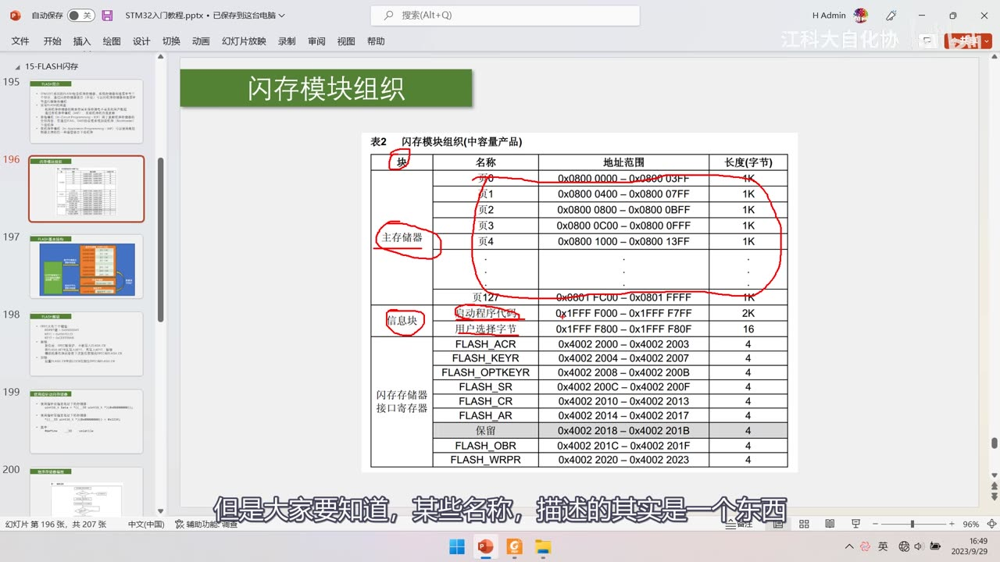
图 6：PPT「闪存模块组织」表2（中容量产品）完整表——主存储器 页0 0x08000000～0x080003FF … 页127 0x0801FC00～0x0801FFFF（各 1K）；信息块：启动程序代码 0x1FFFF000～0x1FFFF7FF 2K、用户选择字节 0x1FFFF800～0x1FFFF80F 16；闪存存储器接口寄存器：FLASH_ACR 0x40022000～03、KEYR 2004～07、OPTKEYR 2008～0B、SR 200C～0F、CR 2010～13、AR 2014～17、保留 2018～1B、OBR 201C～1F、WRPR 2020～23；红笔圈出主存储器与信息块；字幕「某些名称，描述的其实是一个东西」
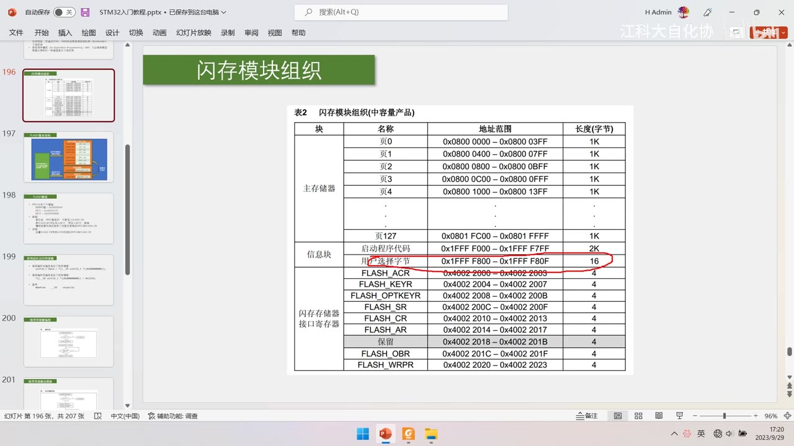
图 7：表2 + 红笔圈注——红圈把「用户选择字节」整行圈出、并给「FLASH_ACR」行划线，强调选项字节只有 16 字节、接口寄存器属外设；字幕未出（讲解中）
3.2 术语对照（作者专门强调「某些名称描述的是一个东西」）
| 常见叫法 | 对应 | 位置 |
|---|---|---|
| 程序存储器 | 主存储器 | 0x08000000 |
| 启动程序代码 | 系统存储器 | 0x1FFFF000（2K） |
| 用户选择字节 | 选项字节 | 0x1FFFF800（16 字节） |
4. FLASH 基本结构与解锁
4.1 FLASH 基本结构（FPEC）
- 核心绿块：闪存存储器接口 / 闪存编程和擦除控制器（FPEC）；
- FPEC 对程序存储器做「擦除和编程」，对选项字节做「擦除和编程」；
- 选项字节还能配置程序存储器的读/写保护（箭头「配置读写保护」）；
- FPEC 不能操作系统存储器（Bootloader 由原厂固化）。
4.2 三个键值
| 键 | 值 | 作用 |
|---|---|---|
| RDPRT 键 | 0x000000A5 | 解除读保护（写到 RDP 选项字节位置） |
| KEY1 | 0x45670123 | 解锁第一道锁 |
| KEY2 | 0xCDEF89AB | 解锁第二道锁 |
- 「KEY」直译＝钥匙/密钥寄存器；键值可以随便定义，只要不容易被「翘锁」（都是 1/0 交替的刁钻组合）。
4.3 解锁与加锁（两把锁）
- 大锁（FPEC / FLASH_CR）：复位后 FPEC 被保护、不能写
FLASH_CR；在FLASH_KEYR先写 KEY1、再写 KEY2 → 解锁；⚠ 错误的操作序列会在下次复位前锁死 FPEC 和 FLASH_CR（想翘锁却没按顺序 → 模块完全锁死，只有复位能恢复）；加锁＝操作完成后尽快置FLASH_CR的 LOCK 位； - 小锁（选项字节）：选项字节另有一把小锁，要在
FLASH_OPTKEYR里写 KEY1、KEY2，并且先置FLASH_CR的 OPTWRE 位才能擦/写选项字节； - 读不需要解锁、写必须解锁：闪存在程序运行时只读，读取权限低可直接读；写要先解锁再走后续流程。
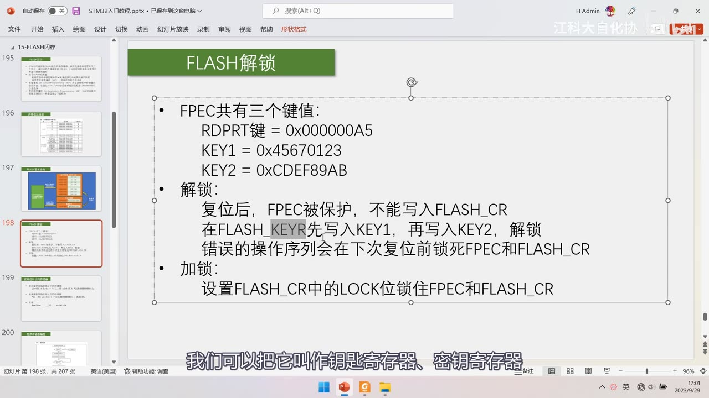
*图 8：PPT「FLASH解锁」——FPEC 共有三个键值：RDPRT 键 = 0x000000A5、KEY1 = 0x45670123、KEY2 = 0xCDEF89AB；解锁：复位后 FPEC 被保护、不能写入 FLASH_CR，在 FLASH_KEYR 先写入 KEY1、再写入 KEY2 解锁；错误的操作序列会在下次复位前锁死 FPEC 和 FLASH_CR；加锁：设置 FLASH_CR 中的 LOCK 位锁住 FPEC 和 FLASH_CR；字幕「我们可以把它叫作钥匙寄存器、密钥寄存器」*
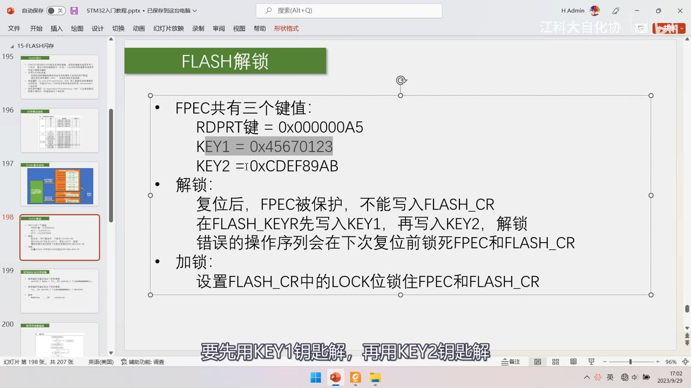
图 9：同页「FLASH解锁」+ KEY1 行高亮——强调*先 KEY1 再用 KEY2 才能解开两道锁；字幕「要先用KEY1钥匙解，再用KEY2钥匙解」*
4.4 使用指针访问存储器
uint16_t Data = *((__IO uint16_t *)(0x08000000)); /* 读 */
*((__IO uint16_t *)(0x08000000)) = 0x1234; /* 写 */
#define __IO volatile
- 三步：①写地址（地址做加减时必须加括号，否则运算符优先级出错）②强制类型转换（16 位用
uint16_t *、8 位uint8_t *、32 位uint32_t *、浮点float */double *）③用*取值或赋值； - 读不需要解锁（只看看、不改，权限低）；写必须解锁；
- 写 SRAM（
0x20000000）可以直接写——SRAM 可读可写，不受 FPEC 保护。
4.5 volatile 的两个作用
- 目的：防止编译器优化；Keil 默认最低优化等级，加不加无影响；提高优化等级后会出现两类问题：
- 用变量计数空循环做延时会被优化掉（编译器认为「没用、白浪费时间」）；
- 变量被缓存到寄存器——中断里改了原变量，而缓存值不同步，导致判断出错；
- 加
volatile就是告诉编译器「每次都执行到位、不要用缓存优化」； - 读写与硬件相关的存储器时必须加 volatile（库函数里到处都是
__IO）。
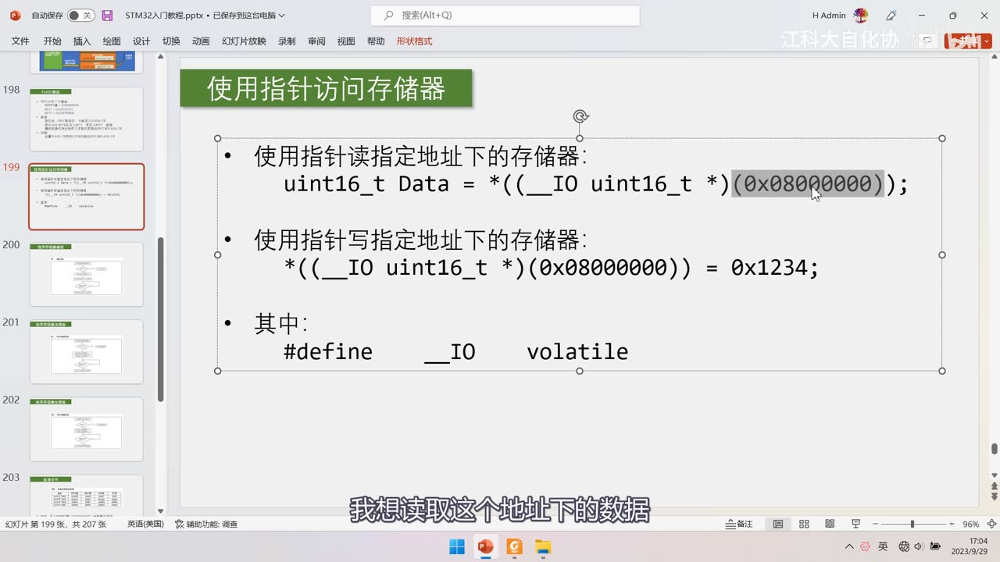
*图 10：PPT「使用指针访问存储器」——读：uint16_t Data = *((__IO uint16_t *)(0x08000000));；写：*((__IO uint16_t *)(0x08000000)) = 0x1234;；其中 #define __IO volatile；字幕「我想读取这个地址下的数据」*
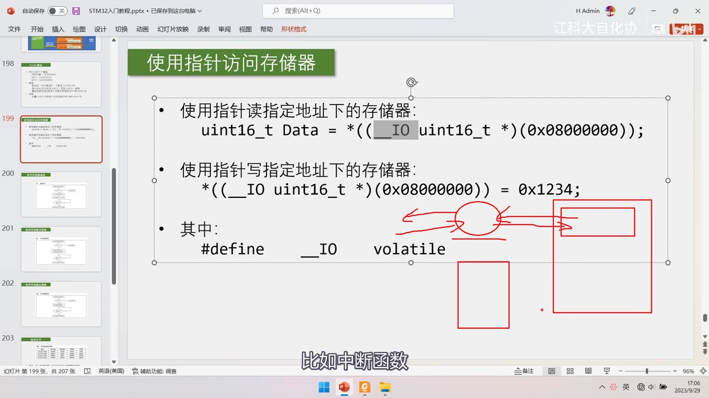
图 11：同页 + 红笔圈注 __IO 与 volatile、红框标出「中断函数」相关说明——讲 volatile 防止变量被缓存到寄存器；字幕「比如中断函数」
5. 三条流程图
5.1 程序存储器全擦除
- 读
FLASH_CR的 LOCK 位； - 若 =1，执行解锁过程（
FLASH_KEYR写 KEY1、KEY2）——注意：库函数里并没有这个判断，直接无条件解锁； - 置
FLASH_CR的 MER（Mass Erase）位 =1； - 置
STRT位 =1（这是触发条件）； - 内部电路自动执行全擦除；
- 查
FLASH_SR的 BSY 位循环等待（BSY=1 表示忙，直到 =0）； - 「读出并验证所有页的数据」——测试程序才做，正常认为成功即可。
5.2 程序存储器页擦除
- 读
FLASH_CR的 LOCK； - 解锁；
- 置
FLASH_CR的 PER（Page Erase）位 =1； - 在
FLASH_AR（Address Register）中写入要擦除的页地址； - 置
STRT位 =1； - 等待 BSY=0。
- 擦除最小单位就是一页＝1K＝1024 字节。
5.3 程序存储器编程
- 读
FLASH_CR的 LOCK； - 解锁；
- 置
FLASH_CR的 PG（Programming）位 =1； - 在指定地址写入半字——这一句本身就是触发条件，不需要置 STRT；
- 等待忙。
- 写入前芯片会检查该地址是否已擦除：未擦除则不执行编程（除非写入的全是 0，那必定没问题）；
- 只能以半字（16 位）写入：字 Word＝32 位、半字 HalfWord＝16 位、字节 Byte＝8 位；
- 写 32 位分两次；写 8 位很麻烦——只能「整页读到 SRAM → 随意修改 → 整页擦除 → 整页写回」；
- 写入大量数据就循环调用该流程。
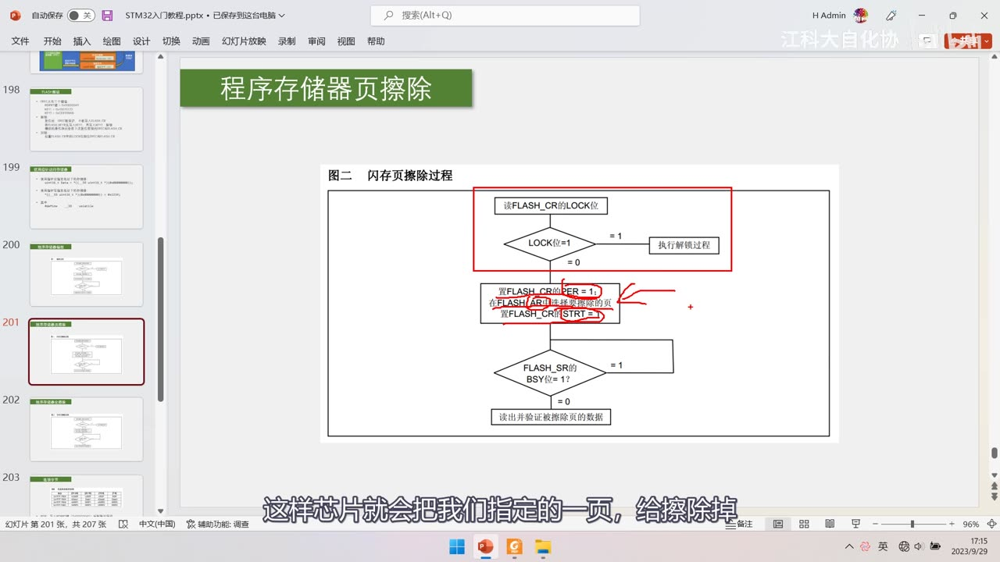
*图 12：PPT「程序存储器页擦除」图二 闪存页擦除过程（红笔标注版）——读 FLASH_CR 的 LOCK 位 → 若 =1 执行解锁过程 → 置 FLASH_CR[PER]=1、在 FLASH_AR 写入要擦除的页、置 FLASH_CR[STRT]=1 → 查 FLASH_SR 的 BSY 位循环 → 读出并验证被擦除页的数据；字幕「这样芯片就会把我们指定的一页，给擦除掉」*
6. 选项字节
- 地址
0x1FFFF800，共 16 字节，成对存储：
| 字节对 | 含义 |
|---|---|
RDP / nRDP |
读保护（写入 RDPRT 键 0x000000A5 解除） |
USER / nUSER |
硬件看门狗、停机/待机是否产生复位等零碎位 |
Data0 / nData0 |
芯片未定义功能，用户可自定义 |
Data1 / nData1 |
同上 |
WRP0 / nWRP0 … WRP3 / nWRP3 |
写保护 |
- 带 n 的必须是反码：写入时要在对应位置写反码才有效，芯片检测到两者不是反码关系则数据无效、对应功能不执行；反码由 FPEC 硬件自动计算（库函数已封装）；
- 去掉带 n 的只剩 8 个字节：RDP、USER、Data0、Data1、WRP0～WRP3；
- 读保护：不解除 RDPRT 时闪存处于读保护状态，无法通过调试器读取程序（防窃取）；
- 写保护粒度（手册 2.5 选择字节说明）：
- 中容量：每 1 位保护 4 个存储页，4 字节 32 位 → 4×32＝128 页，正好覆盖中容量最大 128 页（WRP0 管页 0～31、WRP1 页 32～63、WRP2 页 64～95、WRP3 页 96～127）；
- 小容量：每 1 位保护 4 页（1K/页）→ WRP0 一位管 4 页，4 位共保护 32K（WRP0 管第 0～31 页）；
- 大容量：每 1 位保护 2 页（2K/页），4 字节不够用 → 规定 WRP3 的位 7 保护剩余所有页（第 62～255 页），四位共保护 512K；
- ⚠ 写保护位是反逻辑：
0＝实施写保护、1＝不实施写保护（默认是 1，因为擦除后全是 1）。 - 选项字节擦除/编程（手册只给文字流程）：擦除——①解锁闪存 ②检查
FLASH_SR的 BSY（确认没有其他闪存操作）③解锁FLASH_CR的 OPTWRE 位（在FLASH_OPTKEYR写 KEY1、KEY2，解小锁）④置FLASH_CR的 OPTER=1 ⑤置STRT=1 ⑥等 BSY=0；编程——检查 BSY → 解小锁 → 置FLASH_CR的 OPTPG=1 → 指针写入半字 → 等待忙。 - FPEC 会自动计算高字节的反码；当闪存由「保护」变为「未保护」时会自动执行整片擦除。
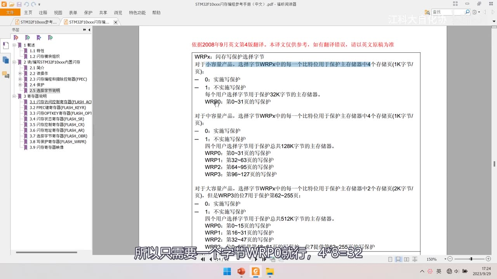
*图 13：手册《STM32F10xxx闪存编程参考手册》2.5 选择字节说明 WRPx——小容量：每比特位保护主存储器中 4 个存储页（1K/页），0＝实施写保护、1＝不实施写保护，WRP0 保护第 0～31 页（共 32K）；中容量：四位保护 128K（WRP0 页 0～31、WRP1 页 32～63、WRP2 页 64～95、WRP3 页 96～127）；大容量：每比特位保护 2 页（2K/页）、WRP3 位 7 保护第 62～255 页，共 512K；字幕「所以只需要一个字节 WRP0 就行，4×8=32」*
7. 器件电子签名
- 存放在闪存存储器模块的系统存储区域、出厂时编写、不可更改、用指针读指定地址即可获取；
- 闪存容量寄存器
F_SIZE：基地址0x1FFFF7E0，大小 16 位（以 K 字节为单位，例0x0080＝ 128K 字节；0x0040＝ 64K）； - 产品唯一身份标识寄存器（UID）：基地址
0x1FFFF7E8，大小 96 位；- 用途：序列号（USB 字符串序列号等终端应用）、密码（与加密算法结合提高代码安全性）、激活带安全机制的自举过程；
- 任何情况下唯一、不能修改；可按字节（8 位）/半字（16 位）/全字（32 位）读取，偏移
0x00； - 96 位每片都不同 → 可用于加密：程序多处加 ID 判断，非指定设备不执行 → 程序被盗到别的设备上也难运行。
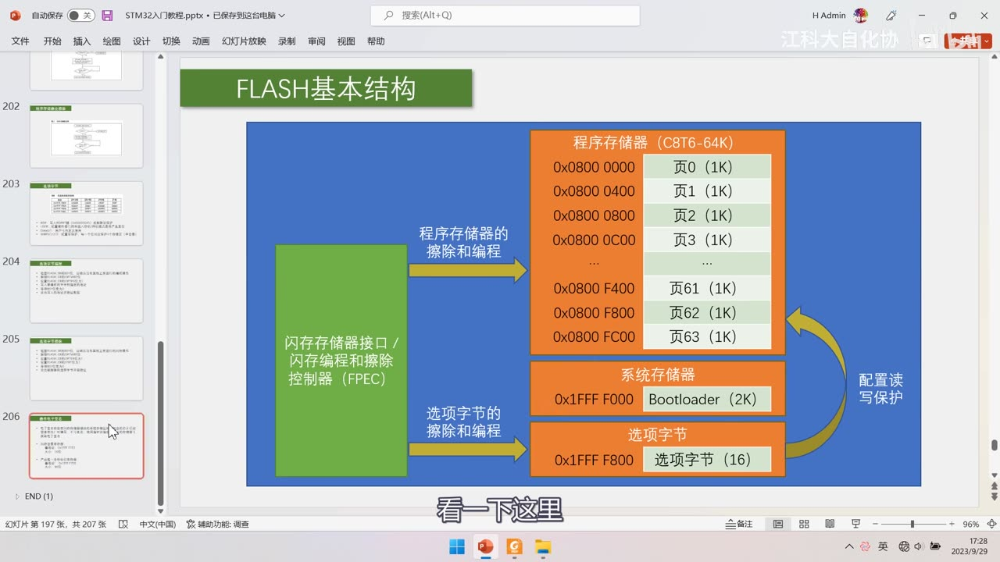
*图 14：PPT「FLASH基本结构」（作者自绘）——左侧绿块 闪存存储器接口 / 闪存编程和擦除控制器（FPEC）；右侧 程序存储器（C8T6-64K）：0x0800 0000 页0(1K)、0x0800 0400 页1、0x0800 0800 页2、0x0800 0C00 页3…0x0800 F400 页61、0x0800 F800 页62、0x0800 FC00 页63；下方 系统存储器 0x1FFF F000 Bootloader(2K)、选项字节 0x1FFF F800 选项字节(16)；箭头「程序存储器的擦除和编程」「选项字节的擦除和编程」「配置读写保护」；字幕「看一下这里」*
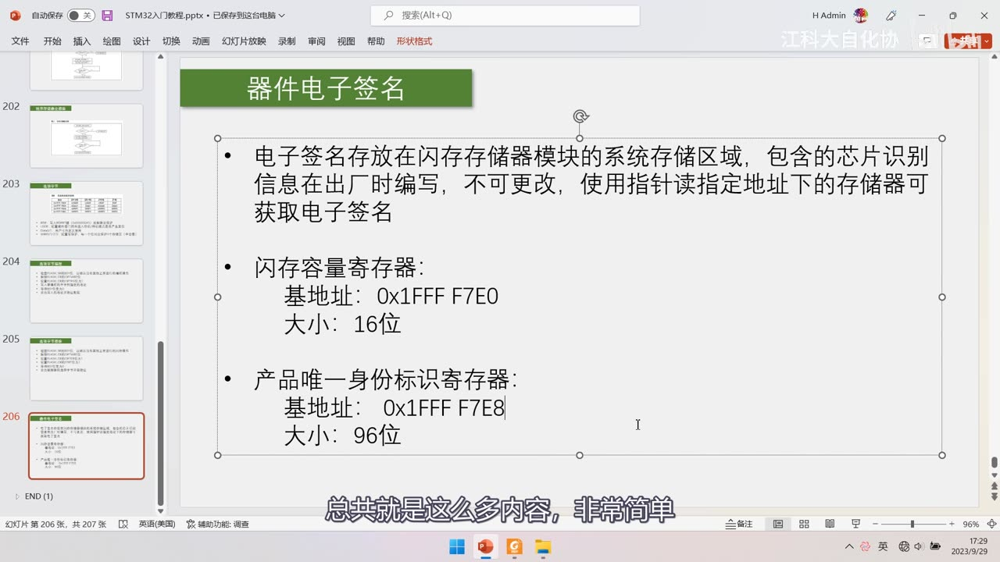
图 15：PPT「器件电子签名」——电子签名存放在*闪存存储器模块的系统存储区域，包含的芯片识别信息在出厂时编写、不可更改，使用指针读指定地址即可获取；闪存容量寄存器：基地址 0x1FFFF7E0、大小 16 位；产品唯一身份标识寄存器：基地址 0x1FFFF7E8、大小 96 位；字幕「总共就是这么多内容，非常简单」*
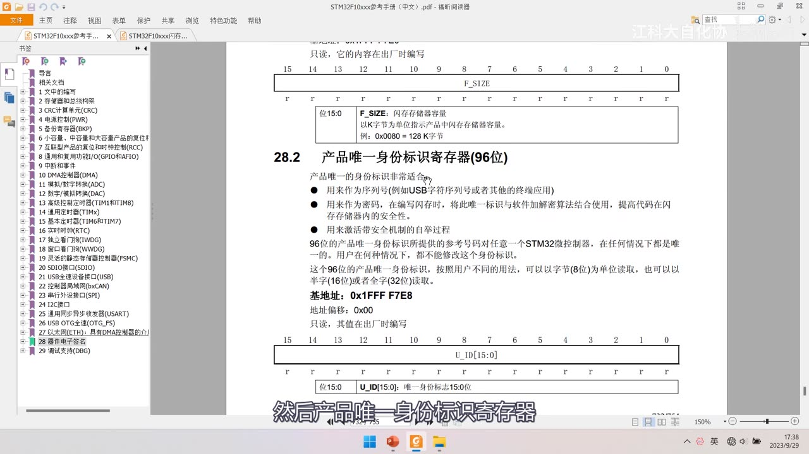
图 16：参考手册「28.2 产品唯一身份标识寄存器（96 位）」——位 15:0 为 F_SIZE（31:16 保留；以 K 字节为单位，例 0x0080＝128K 字节）；96 位 UID 用途：序列号、密码（与加密算法结合提高代码安全性）、激活带安全机制的自举过程；任何情况下唯一、不可修改；可按字节（8 位）/半字（16 位）/全字（32 位）读取；基地址 0x1FFFF7E8、偏移 0x00、只读出厂编写；字幕「然后产品唯一身份标识寄存器」
8. 手册精读要点与两个行为坑
8.1 手册结构
- 《STM32F10xxx 闪存编程》PM0042：ICP/IAP 简介、2.3.1 小/中/大容量、2.3.2 Code 接口、2.3.3 预取缓冲区、2.4.1 FPEC、2.4.2 主闪存编程；
- 寄存器章节：
FLASH_ACR（与内核执行代码有关，不用深究）、FLASH_KEYR（闪存锁）、FLASH_OPTKEYR（选项字节小锁）、FLASH_SR（重点 BSY）、FLASH_CR（重点 LOCK/STRT/OPTER/OPTPG/MER/PER/PG）、FLASH_AR（配合页擦除指定页）、FLASH_OBR（把选项字节内容加载进来）、FLASH_WRPR（写保护）。
8.2 坑①：任何读写闪存都会让 CPU 暂停
- 原因：执行代码本身要读闪存，闪存忙时 CPU 无法运行 → 任何读写闪存的操作都会使 CPU 暂停，直到本次编程结束；
- 后果：对时间敏感的频繁中断会卡顿/闪烁——作者举例：点阵屏用定时器中断不断扫描刷新，读写闪存时中断无法执行 → 屏幕快速闪烁（作者自己踩过这个坑）；
- 结论：程序里有对时间要求严格的频繁中断时，慎用内部闪存存用户数据。
8.3 坑②：由保护变未保护会自动整片擦除
- 当闪存由「保护」变为「未保护」时，会自动执行整片擦除——解除读保护要小心数据全丢；
- 另：写/擦除时必须打开 HSI 时钟（
SystemInit里已经配好，不要动它）。
坑与易错点
- 纯理论课：片头只演示两个成品工程，FLASH 库函数零出现；代码在 [15-2]；片头代码里
Store_Data()/Store_Clear()是作者自定义封装，不是标准库函数。 - 四个地址别写串：主存
0x08000000｜ 系统存储器0x1FFFF000（2K） ｜ 选项字节0x1FFFF800（16 字节） ｜ 接口寄存器0x40022000（属外设，不是闪存本体）。 - 容量口径：中容量 128 页×1K＝128K，C8T6 只有页 0～63＝64K；小容量 32 页×1K；大容量 256 页×2K；「芯片 64K/128K」只指主存储器。
- 三个键值：KEY1=0x45670123、KEY2=0xCDEF89AB（写
FLASH_KEYR，先 KEY1 后 KEY2，顺序错会锁死到复位）；RDPRT=0x000000A5（解除读保护）。 - 两把锁：大锁
FLASH_KEYR管 FPEC/FLASH_CR；小锁FLASH_OPTKEYR管选项字节，且要先置 OPTWRE。 - 触发方式差异：全擦除/页擦除＝置位后还要置
STRT；编程＝写半字本身就是触发，不需要 STRT。 - 三条写限制：先擦后写、只能半字写、只能 1 写 0；写 8 位极麻烦（整页读 SRAM→改→整页擦→整页写回）；写全 0 例外可绕过擦除检查。
- 术语对照：字 Word=32 位、半字=16 位、字节=8 位；程序存储器=主存储器、启动程序代码=系统存储器、用户选择字节=选项字节。
- 选项字节反码+反逻辑：16 字节成对（带 n 的是反码、硬件自动算）；写保护 0=保护、1=不保护（默认）。
- 读不解锁、写必解锁；闪存在程序运行时是只读的；SRAM 可直接写。
volatile：防止空循环延时被优化掉、防止变量被缓存到寄存器与中断不同步——读写硬件相关存储器必须加。- 任何读写闪存都会让 CPU 暂停（对时间敏感的频繁中断会卡顿/闪烁）→ 慎用内部闪存存用户数据。
- 闪存由保护→未保护会自动整片擦除。
- 写/擦除需开 HSI 时钟（
SystemInit已配好，别动）。 - 器件电子签名：
F_SIZE@0x1FFFF7E0（16 位）、UID@0x1FFFF7E8（96 位，每片唯一，可加密）。
时间轴
| 时间 | 内容 |
|---|---|
| 0:05 | FLASH 简介 PPT |
| 0:08 | STM32F1 的 FLASH 分三部分 |
| 0:17 | 程序存储器、系统存储器、选项字节 |
| 0:24 | 通过闪存存储器接口擦除和编程 |
| 0:34 | 先看两个程序现象 |
| 0:57 | 第一个是读写内部 FLASH |
| 1:45 | OLED 显示 Flag 标志位 |
| 1:53 | 显示 A5A5 说明存过数据 |
| 1:57 | 按 Key1 变换数据并存储 |
| 2:10 | 按 Key2 全部清零 |
| 2:33 | 断电重启数据不丢 |
| 3:11 | 第二个程序读取芯片 ID |
| 3:22 | 用指针读指定地址 |
| 3:40 | 得到闪存容量 64K |
| 4:03 | 回到 PPT 讲简介 |
| 4:30 | 闪存是非易失性存储器 |
| 4:32 | 回顾存储器映像 |
| 4:41 | ROM 区掉电不丢失 |
| 4:55 | 本节特指 STM32 内部闪存 |
| 5:04 | 程序存储器 0x08000000 |
| 5:09 | 系统存储器 0x1FFFF000 |
| 5:16 | 选项字节 0x1FFFF800 |
| 5:20 | 通过闪存存储器接口擦除和编程 |
| 5:50 | 三个部分分别是什么 |
| 6:10 | 接口只能操作程序存储器和选项字节 |
| 6:27 | 三个部分的具体含义 |
| 6:37 | 读写 FLASH 的两个用途 |
| 6:45 | 用剩余空间存用户数据 |
| 6:53 | C8T6 程序存储器 64K |
| 6:58 | 简单程序只占前面很小一部分 |
| 7:14 | 一定不要覆盖原有程序 |
| 7:22 | 一般选最后几页 |
| 7:31 | 第二个用途是 IAP 自我更新 |
| 8:08 | 红笔圈出 IAP 和 ICP |
| 8:19 | 先介绍 ICP |
| 8:34 | 在线编程不用拆芯片 |
| 8:36 | 更新程序存储器的全部内容 |
| 8:39 | 通过 JTAG 或 SWD 下载 |
| 8:42 | 也可以用系统加载程序 Bootloader |
| 8:54 | 每次下载都是整体覆盖 |
| 9:02 | 再介绍 IAP |
| 9:04 | 可用任一种通信接口下载 |
| 9:19 | 可以做远程升级 |
| 9:39 | 自己写 Bootloader |
| 10:00 | 接收数据写入正常运行的地方 |
| 10:59 | 看表2 闪存模块组织 |
| 11:47 | 主存储器页 0 到页 127 |
| 11:48 | 每页 1K |
| 11:50 | 中容量共 128K |
| 12:30 | C8T6 只有页 0 到页 63 |
| 12:31 | 信息块包含启动程序代码 |
| 12:32 | 系统存储器 2K |
| 12:45 | 用户选择字节 16 字节 |
| 13:16 | 接口寄存器是外设 |
| 13:40 | 小中大容量页数不同 |
| 13:43 | 要查闪存编程参考手册 |
| 13:48 | 红笔划启动程序代码那一行 |
| 14:00 | 主存储器从 0x08000000 开始 |
| 14:30 | 每页 1K 共 128 页 |
| 15:00 | 中容量一共 128K |
| 15:30 | 小容量 32 页、大容量 256 页 2K |
| 16:05 | 信息块不计入芯片容量 |
| 16:30 | 提醒某些名称描述的是一个东西 |
| 16:32 | 页起始地址规律 |
| 17:07 | 步进 0x400 |
| 17:34 | 地址以 000/400/800/C00 结尾 |
| 17:49 | 闪存五项特性 |
| 17:55 | 先擦后写 |
| 17:58 | 以页为最小单位擦除 |
| 18:29 | 擦除后全变为 1 |
| 18:31 | 看 FLASH 解锁 PPT |
| 19:12 | FPEC 共有三个键值 |
| 19:17 | RDPRT 键解除读保护 |
| 19:54 | 先 KEY1 再 KEY2 |
| 20:25 | 错误序列会锁死 |
| 20:59 | 加锁用 LOCK 位 |
| 21:16 | 看指针访问存储器 |
| 21:35 | 读指定地址的存储器 |
| 21:47 | 写指定地址的存储器 |
| 22:01 | 三步：写地址、类型转换、取值 |
| 22:04 | 地址加减必须加括号 |
| 22:20 | 类型转换决定读写宽度 |
| 22:57 | 读不需要解锁 |
| 22:59 | 写必须解锁 |
| 23:02 | 写 SRAM 可以直接写 |
| 23:05 | volatile 防止编译器优化 |
| 23:21 | 红笔圈出 __IO 和 volatile |
| 23:41 | 空循环延时会被优化掉 |
| 24:20 | 变量被缓存到寄存器 |
| 24:48 | 中断里改了缓存不同步 |
| 25:24 | 硬件相关存储器必须加 volatile |
| 25:45 | 提高优化等级后才会出问题 |
| 26:20 | 默认最低优化等级不加也行 |
| 27:06 | 下面看三条流程图 |
| 27:26 | 全擦除流程 |
| 27:53 | 读 LOCK 位再解锁 |
| 29:25 | 页擦除流程图 |
| 29:37 | 置 PER 位 |
| 29:40 | 在 FLASH_AR 写页地址 |
| 29:48 | 置 STRT 位触发 |
| 30:13 | 等待 BSY |
| 30:19 | 擦除最小单位是一页 |
| 30:24 | 编程流程 |
| 30:50 | 置 PG 位 |
| 30:56 | 写半字就是触发条件 |
| 30:58 | 红笔标注页擦除流程 |
| 30:59 | 不需要置 STRT |
| 31:07 | 写前检查是否已擦除 |
| 31:08 | 写入全 0 一定没问题 |
| 31:24 | 只能以半字写入 |
| 31:32 | 字 32 位、半字 16 位、字节 8 位 |
| 31:37 | 写 8 位很麻烦 |
| 31:43 | 整页读 SRAM 改完写回 |
| 32:43 | 表2 红圈用户选择字节 |
| 32:44 | 选项字节成对存储 |
| 33:23 | 带 n 的是反码 |
| 33:38 | 反码由硬件计算 |
| 34:05 | RDP 读保护 |
| 34:14 | USER 一些零碎配置 |
| 34:23 | Data0 和 Data1 用户自定义 |
| 34:34 | 手册讲 WRPx 写保护 |
| 34:44 | 中容量一位保护 4 页 |
| 34:49 | 4 字节 32 位正好 128 页 |
| 35:15 | 大容量一位保护 2 页 |
| 35:22 | WRP3 最高位保护剩余所有页 |
| 35:26 | 写保护是反逻辑 |
| 35:39 | 1 是不保护、0 是保护 |
| 35:42 | 默认擦除后全是 1 |
| 35:53 | 选项字节擦除流程 |
| 36:21 | 还要解小锁 OPTWRE |
| 37:35 | FLASH 基本结构图 |
| 37:37 | 中间是 FPEC |
| 37:40 | 程序存储器 64K |
| 37:44 | 器件电子签名 |
| 37:58 | 出厂时编写不可更改 |
| 38:26 | 闪存容量寄存器 |
| 38:42 | 产品唯一身份标识寄存器 |
| 38:55 | 96 位每片不同 |
| 39:00 | 可用于加密 |
| 39:07 | 程序多处加 ID 判断 |
| 39:14 | 被盗到别的设备也难运行 |
| 39:29 | 看闪存编程参考手册 |
| 40:35 | 预取缓冲区 |
| 40:52 | FPEC 结构 |
| 40:55 | 主闪存编程 |
| 41:04 | 重要注意事项 |
| 41:06 | 任何读写闪存都会让 CPU 暂停 |
| 41:20 | 因为执行代码要读闪存 |
| 41:32 | 频繁中断会卡顿 |
| 42:10 | 点阵屏扫描会闪烁 |
| 42:20 | 作者自己踩过这个坑 |
| 42:23 | 慎用内部闪存存用户数据 |
| 42:45 | FLASH_ACR 与内核执行代码有关 |
| 43:10 | FLASH_SR 重点是 BSY 忙标志 |
| 43:40 | FLASH_CR 的各个控制位 |
| 44:10 | FLASH_AR 配合页擦除用 |
| 44:40 | FLASH_OBR 与 FLASH_WRPR |
| 45:20 | 手册还有器件电子签名一章 |
| 45:44 | 寄存器章节重点 |
| 45:46 | 手册 28.2 唯一身份标识 |
| 45:59 | 可按字节半字全字读取 |
| 46:12 | 下小节学闪存的代码部分 |
| 46:14 | 那我们下一小节再见 |
存疑
- 采集侧说明：本集
transcript.txt落盘是合法 UTF-8（transcript_selfcheck.py自检 OK、ratio=99.9%）；“乱码”是读取端按 GBK/ANSI 解码造成的（PowerShell 5.1 的Get-Content不加-Encoding utf8就会显示鍝堝柦式乱码）。本条笔记编写时按subtitle_frames.tsv重建过一次 transcript（1246 段、4.5～2776.5s），按当前版本回锚即可；不是落盘 bug，勿重复“修编码”。 - 文本错字（基于 tsv 统计）：
存储→ 「存诸」（14 处）、数据→ 「数居」（4 处）、基地址→ 「基地」（4 处）、运行→ 「云行」（3 处）、读→ 「卖」（3 处）、电子签名→ 「电字签名」（1 处）——已按画面校正。 - 本集是纯理论课：00:40–04:05 仅演示两个成品工程（
15-1 读写内部FLASH、15-2 读取芯片ID），无写码；FLASH 库函数（FLASH_Unlock/FLASH_ErasePage/FLASH_ProgramHalfWord等）本集一个都没出现，留 [15-2]；片头代码里的Store_Data()/Store_Clear()是作者自定义封装。 - 四个地址口径：主存
0x08000000、系统存储器0x1FFFF000（2K）、选项字节0x1FFFF800（16 字节）、接口寄存器0x40022000（外设，不是闪存）；电子签名F_SIZE@0x1FFFF7E0（16 位）、UID@0x1FFFF7E8（96 位）。 - 容量口径：中容量 128 页×1K＝128K，C8T6 只有页 0～63＝64K；小容量 32 页×1K；大容量 256 页×2K；64K/128K 只指主存储器。
- 库函数触发差异：全擦除/页擦除置位后还要置
STRT；编程写半字本身即触发、不用 STRT。 - 写 8 位极麻烦（整页读 SRAM→改→整页擦→整页写回），只能半字写；但写全 0 可以绕过擦除检查。
- 术语对照：字 Word=32 位 / 半字=16 位 / 字节=8 位；程序存储器=主存储器、启动程序代码=系统存储器、用户选择字节=选项字节。
- 选项字节：16 字节成对、带 n 的必须是反码（硬件自动算）；写保护反逻辑：1=不保护（默认）、0=保护；中容量 1 位保护 4 页、大容量 1 位保护 2 页且 WRP3 位 7 保护剩余页。
- 两个行为坑：①任何读写闪存都会让 CPU 暂停（对时间敏感的频繁中断——如点阵屏扫描——会卡顿/闪烁，作者踩过坑 → 慎用内部闪存存用户数据）②闪存由保护→未保护会自动整片擦除；另：写/擦除需开 HSI 时钟（
SystemInit已配，别动）。 - 片尾 46:12「我们下小节来学习闪存的代码部分」→ 写码在 [15-2]。